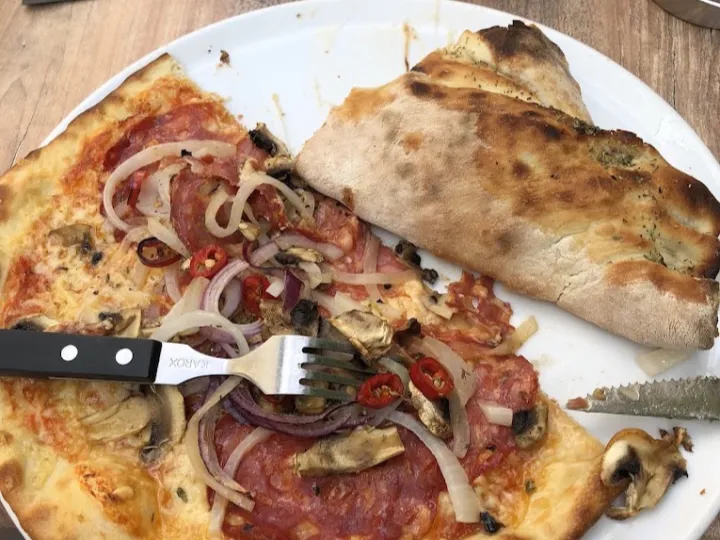
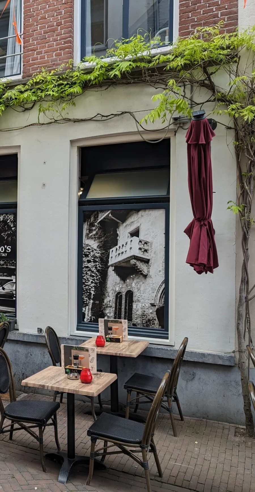
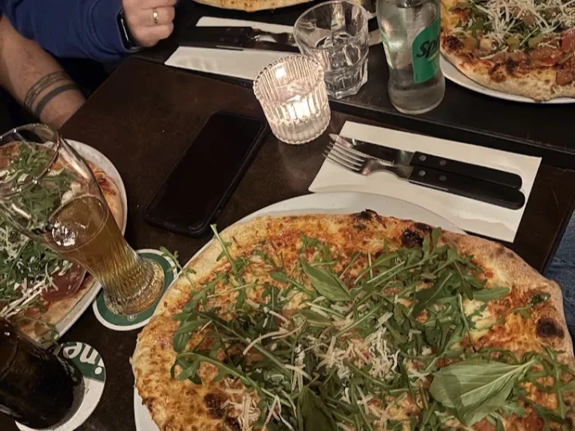
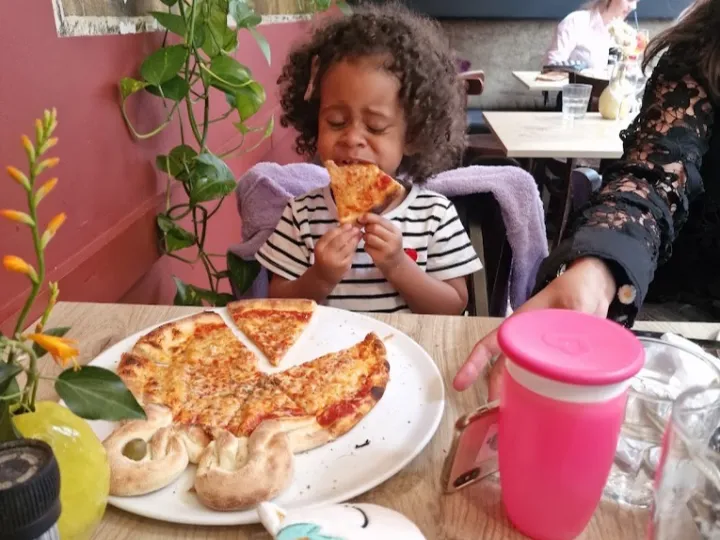
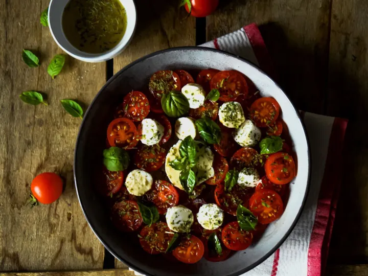
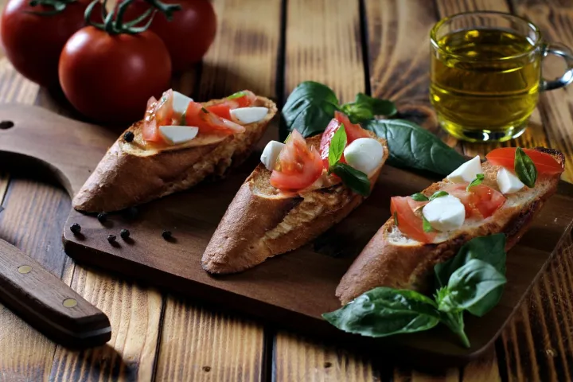
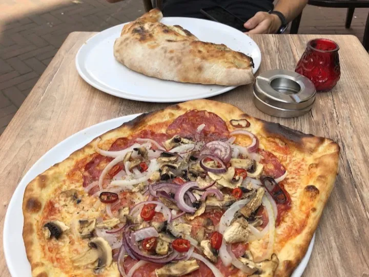
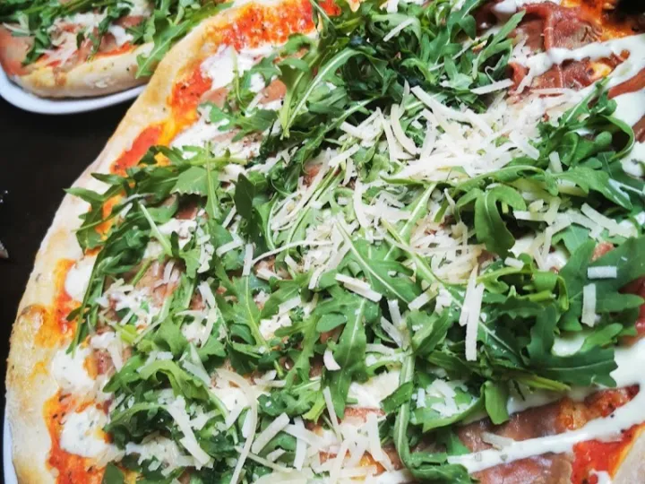

Een dunne bodem, in minuten gebakken
De oven is het hart van de keuken. Dun deeg, een goed gebakken rand, en op tafel voordat hij afkoelt.
Ons verhaal

Wie door het smalle Stoofstraatje loopt, kijkt zo Italië in. In onze ramen hangen grote sepiafoto’s: een kanaal in Venetië, het balkon van Verona, een Italiaans-Amerikaanse pizzeria van vroeger. Achter dat glas voeden we Den Bosch al jaren.
Binnen is het klein en warm, en ’s zomers gaan de tafels naar buiten onder de blauweregen. Het is zo’n plek waar een tafel voor twee en een gezin van vijf naast elkaar zitten zonder dat iemand dat erg vindt.




De kaart doet wat de naam belooft. Eerst 32 pizza’s, dun en royaal belegd. En dan het più: pasta alle kanten op, calzone, gerechten uit de oven, dolci en een koffie met een verhaal.

De oven is het hart van de keuken. Dun deeg, een goed gebakken rand, en op tafel voordat hij afkoelt.
Vriendelijk en attent komt het vaakst terug in onze reviews, van een gezin van vijf tot een tafel voor twee.

Het Stoofstraatje is autovrij en stil. Op een warme middag zit je hier aan de fijnste tafel van de Uilenburg.
“De beste pizza's van Den Bosch, zeker voor de prijs. Ik vond het interieur en de sfeer ook heel fijn. Het is er klein, en juist daardoor voelt het intiem en idyllisch.”
“Gezellige en sfeervolle pizzeria met lekkere bruschetta, heerlijke dunne en knapperige pizza, royaal beleg en gastvrij personeel. Een fijne plek met goed eten en een goede sfeer.”
“Heel aardig en beleefd personeel. Ze deden extra hun best voor mijn gezin van vijf en gaven ons een perfecte tafel met ruimte zat. Het eten was ook heerlijk. Een echte aanrader.”
Alle 127 gerechten en dranken online, met alle prijzen erbij.
Zo snel mogelijk, of op het kwartier dat jou uitkomt. Bezorgen is gratis, zonder minimumbedrag.
Je bestelling staat klaar op Stoofstraat 10. Betalen doe je bij ontvangst, met pin of contant.

Loop gewoon binnen op Stoofstraat 10. Reserveren hoeft nooit.
Dagelijks open vanaf 16.30 uur